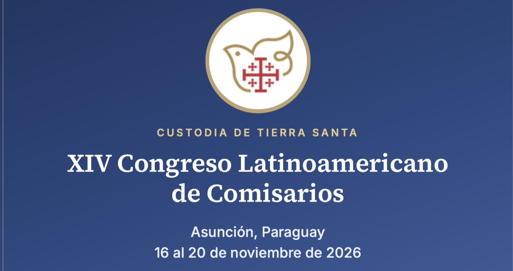
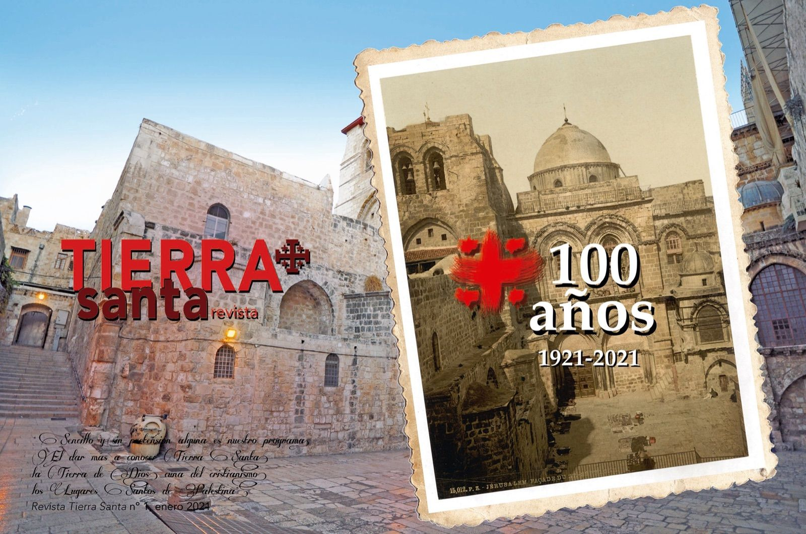

“You bring the dinner 2026”
As in previous years, we have set ourselves the goal of reaching 1,000 contributions before 31 December
Read story
Latest news
As in previous years, we have set ourselves the goal of reaching 1,000 contributions before 31 December
Read story
The foundation stone of the Good Shepherd chapel was laid in memory of Pope Francis
Read story



Revista Tierra Santa
The Revista Tierra Santa belongs to the Franciscans of the Order of Friars Minor, specifically to the Custody of the Holy Land in Spain (Holy Land Centre). Its main purpose is to help the Holy Land. Its other aims are to make the Land of Jesus known through the magazine, to publish works that present every aspect of that Land, and to offer biblical, theological, historical and archaeological formation through courses, lectures and study days that allow participants to deepen their knowledge of everything related to the figure of Our Lord and the Land in which He became flesh and lived until His Resurrection.
The magazine Tierra Santa, published every two months, is the means of making the Franciscan spirit of the Holy Land known in the Spanish language, offering current, historical, archaeological and biblical information about the Holy Places.


Head of the Magazine
Franciscan priest of the diocese of Madrid. He studied Theology at the Faculty of Theology of Northern Spain (Burgos), earned a Licentiate in Dogmatic Theology at the Pontifical University of Salamanca, a Doctorate in Dogmatic Theology from the San Dámaso Ecclesiastical University (Madrid) and a Licentiate in Fundamental Theology from the Theological Institute of Murcia (Pontifical University Antonianum), as well as further studies in Jerusalem (exegesis and archaeology) and Madrid (consecrated life).
He currently teaches at the San Dámaso Ecclesiastical University and the Theological Institute of Murcia, and is President of the Commissaries of the Holy Land in Spain and Portugal and legal representative of the Custos of the Holy Land in Spain.

Director
Graduate in Journalism with a diploma in Advanced International Studies and wide experience as a Community Manager and in Social Media. She has more than 15 years of experience in communication roles in multinationals such as Repsol, in public institutions such as the Ministry of Defence, in private bodies such as the Instituto de Seguridad Global and in foundations such as CODESPA.
She has also taught Communication at the Complutense University of Madrid and has written articles for several specialised magazines.

Editorial board
Doctor of Theology from the San Dámaso Ecclesiastical University (Madrid), where she is an assistant professor, and associate professor at the Faculty of Christian and Classical Literature – San Justino (UESD). Research areas: Biblical Archaeology, comparative Iconography, biblical studies, Judaism and its languages. She teaches Aramaic and Hebrew, and is also a visiting professor at the Francisco de Vitoria University, teaching History of Civilisations.
She has long experience in Archaeology: since 1996 she has worked as an archaeologist at Tel Hazor (Galilee, Israel) and since 2012 in the City of David, Jerusalem. She contributes to National Geographic España and other scientific journals.

Secretary
María José Villegas Villena was born in Madrid; she is married and the mother of six children. She graduated in Psychology, specialising in Developmental Psychology, from the Complutense University of Madrid. A member of the Neocatechumenal Way, through which she received her love for the Church and for the Holy Land as the source of the Faith from which the roots of Christianity spring. She has made many pilgrimages to Israel since 1999, discovering that it is the place God chose to become flesh to save mankind.
Archive · Since 1921
819 issues · 1921 – 2025
Every issue since 1921, free and complete
Choose where to begin.
Swipe to explore
or use the arrows ← →
Subscriptions
Subscription as a Friend donor, €50 / year.
This subscription automatically enters you in the annual draw for trips to the Holy Land.
SubscribeSubscription as a Benefactor donor, €80 / year.
This subscription automatically enters you in the annual draw for trips to the Holy Land.
SubscribeStandard subscription, €30 / year. Also in PDF: €20 / year.
You can take part in the annual draw for trips to the Holy Land (+€12.00).
SubscribeSubscription as a Protector donor, €150 / year.
This subscription automatically enters you in the annual draw for trips to the Holy Land.
Subscribe